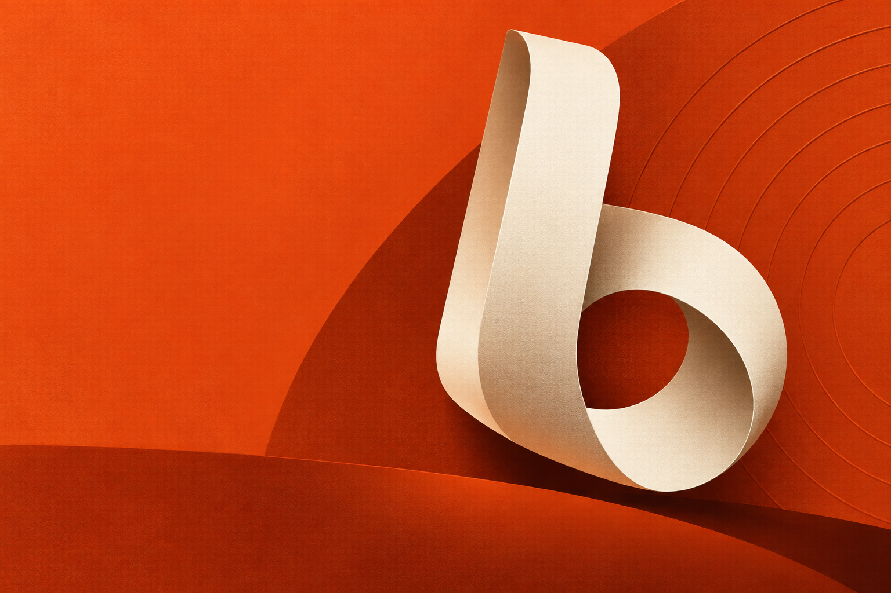

Tell it what's on your mind.
A task, a half-formed idea, or that thing you've been putting off. Just say it your way.
An AI partner that thinks with you, works across your tools, and follows through. One Bibo. Built to move your world forward.
One companion. More in tune with you, over time.

Key changes. Sources. Next steps.
Many sides to your life.
One companion for all of them.
UNDERSTANDS THE GOAL. DOES THE WORK.
Start with a thought. Hand over a task.
Stay in the loop,
without staying on the clock.
A task, a half-formed idea, or that thing you've been putting off. Just say it your way.
Research, compare, organize, prepare. Your work can keep moving, even after you close the tab.
A clear brief. A thoughtful shortlist. And a check-in when a decision needs to be yours.
INTENT INTO ACTION
Research a question. Prepare a plan. Stay on top of what matters. See how Bibo turns your context into useful work.
Interactive walkthrough · Example content, not a live AI session
Noted. A little less itinerary.
A little more breathing
room.
FAMILIAR FEELS DIFFERENT
Your projects. Your pace. The thing you changed your mind about. Bibo is designed to bring that understanding into the next conversation.
See, correct, and remove what it remembers.
A useful nudge when it matters. Quiet when it doesn't.
You set the boundaries. Bibo checks before crossing them.
A LITTLE MORE TO KNOW
Good partnerships start with clarity.
Bibo is a personal AI companion in development: a place to think things through, hand off work, and build understanding over time. This site introduces the product direction through interactive examples.
No. You have one Bibo. Conversations, projects, and tasks can stay organized without creating a team of separate AI personalities.
Bibo is being designed to work in the cloud, so a handed-off task won't depend on keeping your laptop open. The product will make progress and decisions that need you visible.
No. Access is intended to follow the connections you explicitly authorize, with permission controls you can review and revoke. This preview connects no accounts, accesses no personal files, and submits no tasks.
You can explore the interactive walkthrough here. Account registration, real task execution, and pricing are not available in this preview. Responses and results are illustrative examples.
PUT YOUR IDEAS IN MOTION
One partner. From understanding you to following through.